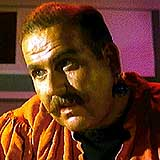
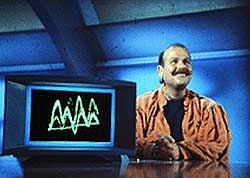
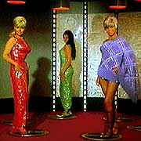

|
MANCHETE
DO EPISDIO
Conto de fadas disfarado de fico
cientfica vira clssico de Jornada
Episdio
anterior | Prximo episdio
Sinopse:
Data Estelar: 1329.1.
 A
USS Enterprise persegue uma nave desconhecida em um cinturo de
asterides para salvar sua tripulao antes que fosse destrudas.
As quatro pessoas a bordo so teleportadas para a Enterprise: Harry
Mudd e trs belas mulheres, Ruth Bonaventure, Eve McHuron e Magda
Kovas. Mudd transportava as trs at Ophiuchus VI para que elas se
casassem com colonos neste planeta.
Os computadores da Enterprise revelam que Mudd foi acusado de vrias
infraes da lei. Em perseguio nave de Mudd, a Enterprise
queimou seus cristais de ltio, que alimentam os motores da nave, e
Kirk ordena um curso para o mais prximo planeta de minerao de
ltio. Este planeta Rigel XII, e habitado somente por trs
mineradores.
Mudd consegue contatar Ben Childress, chefe dos mineradores, e faz
um acordo com ele. Mudd promete entregar trs lindas mulheres aos
solitrios trabalhadores de Rigel XII em troca dos cristais de ltio
e a garantia de sua prpria liberdade.
Chegando no planeta, Eve tenta escapar, tendo se apaixonado por Kirk
e no querendo se casar com um dos mineradores, mas Ben Childress a
traz de volta. Eles descobrem que as mulheres esto usando uma
droga ilegal chamada "plula de Vnus" para que paream
bonitas, e que sem a droga, essas mulheres no tm nada de
especial. Quando a fraude descoberta, Magda e Ruth j esto
casada com os mineradores, para a satisfao de todos os
envolvidos. Eve, que percebe que Kirk j casado, com sua
carreira e sua nave, aceita casar-se com Ben. Kirk pega os cristais
necessrios para a Enterprise e mantm Harry Mudd sob custdia,
para responder por seus crimes.
Comentrios:
"Mudds Women"
um conto de fadas disfarado de fico cientfica. Alis, essa
caracterstica - a incluso de fatores inverossmeis em uma histria
supostamente verossmil - um dos traos de muitas das histrias
elaboradas por Gene Roddenberry.
 Gene
s vezes usava de exageros dessa natureza para clarificar a
"mensagem" do episdio, mesmo que isso significasse
abandonar toda e qualquer possibilidade de que a histria
sobrevivesse a uma anlise crtica mais aprofundada.
Esse trao visto claramente em duas histrias elaboradas por
Roddenberry para Jornada nas Estrelas, "Mudds
Women" e "The Omega Glory".
No caso de "Mudds Women", essa caracterstica
se manifesta na forma das "transformaes" sofridas pelo
trio feminino de Mudd, que alm de no serem convincentes, no
apresentam justificativas satisfatrias, uma vez que fica claro que
as "plulas de Vnus" no tm nada a ver com a beleza
das mulheres.
Esse elemento do roteiro foi trabalhado dessa maneira para ressaltar
a mensagem do episdio, que expressa claramente nas palavras de
Kirk:
Kirk - Theres only one kind of woman... (H
apenas um tipo de mulher...)
Mudd - ..or of man, for one thing... (...ou de
homem, pra ser sincero...)
Kirk - Either you believe yourself, or you dont.
(Ou voc acredita em voc, ou no.)
Esse dilogo mostra apenas a concluso de uma discusso proposta
sutilmente ao longo do episdio sobre o uso de drogas.
As "plulas de Vnus" de Mudd no so diferentes das
drogas atuais: so consumidas para trazer artificialmente uma sensao
de bem estar, para fazer algum sentir-se mais e melhor do que
realmente .
 Pensando
dessa perspectiva, o episdio expe um discurso contrrio ao uso
de drogas. Mas mais do que isso, interessante notar que o recurso
utilizado para defender essa idia no o bvio chavo de
dizer que as drogas so malficas porque debilitam o organismo,
mas sim um argumento mais positivo e menos enfatizado: o simples
fato de que as drogas no so necessrias para que algum se
sinta bem.
Com relao ao desenvolvimento dos personagens principais,
no h grandes destaques. Vemos apenas uma breve meno paixo
de Kirk pela Enterprise, algo que seria melhor explicado em "The
Naked Time".
Por outro lado, neste episdio surge um dos viles mais carismticos
de Jornada nas Estrelas: Harry Mudd. O personagem
foi to bem recebido pelo pblico e a produo que voltaria srie
para um episdio da segunda temporada, "I, Mudd".
Citaes:
Spock - "The fact my internal
disposition differs from yours pleases me no end."
("O fato de que minha disposio interna difere da
sua me agrada imensamente.")
Eve - "Oh, the sound of the male ego - you travel
half-way around the galaxy and its still the same song!"
("Oh, o som do ego masculino - viaja-se por metade da
galxia e ouve-se a mesma cano!")
Trivia:
 A tenente Uhura no est usando o uniforme vermelho neste episdio,
e sim o dourado.
A tenente Uhura no est usando o uniforme vermelho neste episdio,
e sim o dourado.
Ficha
tcnica:
Histria por Gene
Roddenberry
Roteiro por Stephen Kandel
Direo de Harvey Hart
Exibido em 13/10/1966
Produo: 04
Elenco:
William Shatner como James Tiberius Kirk
Leonard Nimoy como Spock
DeForest Kelley como Leonard H. McCoy
James Doohan como Montgomery Scott
Nichelle Nichols como Uhura
George Takei como Hikaru Sulu
Elenco convidado:
Roger C. Carmel como Harry Mudd
Karen Steele como Eve McHuron
Susan Denberg como Magda Kovas
Maggie Thrett como Ruth Bonaventure
Gene Dynarski como Ben Childress
Episdio
anterior | Prximo episdio
|